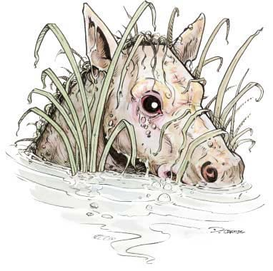

大型精类（水生）

| 生命骰： | 10d6+30 (65 hp) |
| 先攻： | +5 |
| 速度： | 50 英尺，游泳 50 英尺 |
| 防御等级： | 22（-1 体型，+1 敏捷，+12 天生），接触 10，措手不及 21 |
| 基本攻击／擒抱： | +5/+16 |
| 攻击： | 蹄踢 +11 近战 |
| 全力攻击： | 2 蹄踢 +11 近战和啮咬 +6 近战 |
| 伤害： | 蹄踢 1d6+7，啮咬 1d8+3 |
| 面宽／触及： | 10 英尺/5 英尺 |
| 特殊攻击： | 类法术能力，拌摔 |
| 特殊能力： | 变化形态，寒冷抗力 20，火焰抗力 20，昏暗视觉，灵敏嗅觉 |
| 豁免： | 强韧 +6，反射 +10，意志 +10 |
| 属性： | 力量 24，敏捷 13，体质 17，智力 10，感知 13，魅力 14 |
| 技能： | 唬骗 +15，交涉 +6，易容 +2 (+4 表演)，躲藏 +5，威吓 +4，聆听 +14，潜行 +14，察言观色 +14，侦察 +14，游泳 +20 |
| 专长： | 警觉，精通先攻，钢铁意志，闪电反射 |
| 地域： | 任意水生和陆地 |
| 组织： | 单独 |
| 挑战等级： | 10 |
| 宝物： | 标准 |
| 阵营： | 总是混乱邪恶 |
| 进化： | 11�C15 HD（大型）；16�C20 HD（超大型） |
并非所有精类都是羞怯离群的自然之灵。马形水怪是嗜血而邪恶的精类，以制造混乱和谋杀为乐。它们居住在河流、湖泊、池塘和其他水体，在那里溺死猎物然后吞噬尸体。
在其自然形态下，马形水怪看起来像一匹有着乌黑眼睛的大型战马。它的身体不断滴着水，并覆盖着腐烂的植物碎屑。马形水怪散发着死亡和腐烂的气味。马匹在马形水怪的领地范围内会变得焦躁不安。
马形水怪可以变形成人形。即使在这种形态下，马形水怪也保留着一股野性而令人不安的气息，有着凌乱的长发，眼神飘忽，声音粗哑。这些生物穿着破烂的衣服，散发着腐烂的鱼腥味和潮湿的气味。
在这种伪装下，马形水怪常常假扮成渔夫、猎人或迷路的旅人。一种常见的策略是它假装在湖中央溺水，以此引诱受害者跳入水中施救。
马形水怪在池塘、湖泊、河流和其他内陆水体中筑巢。如果有人仔细搜索这样的区域，会发现大量骸骨和尸体散落在泥泞的水底。
马形水怪会说通用语和木族语。
马形水怪通常会变成人形，试图引诱或说服个体靠近其水中巢穴。或者，马形水怪就在水面下等待受害者靠近。它使用魅惑人类吸引受害者，然后使用情绪术使受害者充满恐惧或将他们定在原地以便轻松杀害。
一旦受害者靠近水域或进入水中，马形水怪便会恢复其原始形态并发起攻击。它擅长在水中拌摔对手，使他们面临溺水的危险。
马形水怪可被召唤自然盟友 IX 法术召唤。
类法术能力 (Spell-Like Abilities)：随意――侦测思想 (detect thoughts)。3次/天――魅惑人类 (charm person)，情绪术 (emotion)。施法者等级 7级；豁免检定 DC 12 + 法术等级。（译者注：emotion为3e法术，根据升级手册可自行升级为极度绝望和强大希望，根据阵营来说，这里应该是极度绝望）
拌摔 (Trip) (Ex)：马形水怪若用蹄踢攻击命中对手，可以尝试以一个自由动作拌摔其对手，而无需进行接触攻击或引发借机攻击。如果拌摔尝试失败，对手不能反摔马形水怪。
变化形态 (Alternate Form) (Su)：马形水怪可以以一个标准动作变形成人类（任意性别）。变回其原始形态也是一个标准动作。 （译者注：根据勘误，Delete the second sentence of the Alternate Form special quality. 第二句应该删除）
灵敏嗅觉 (Scent) (Ex)：马形水怪可以侦测接近的敌人，嗅出隐藏的对手，并依靠嗅觉进行追踪。
技能：马形水怪在用于执行某些特殊动作或避开危险的游泳检定上拥有 +8 种族加值，并且在进行游泳检定时总是可以选择取 10，即使分心或身处险境。